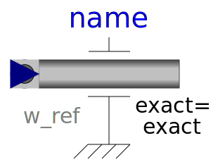
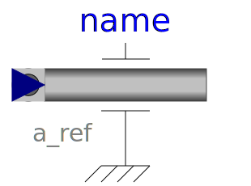
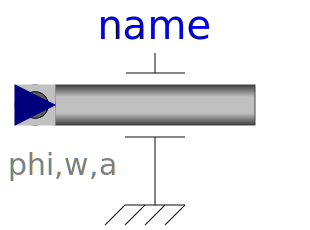
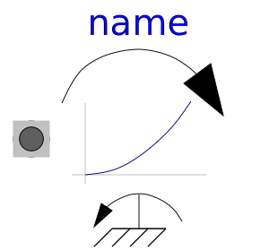
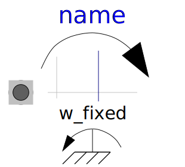
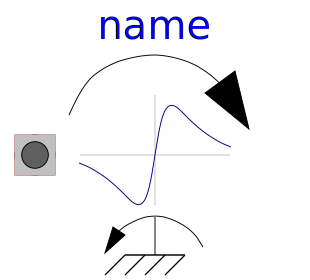

This package contains ideal sources to drive 1D mechanical rotational drive trains.
| Name | Description |
|---|---|
| Position | Forced movement of a flange according to a reference angle signal |
|  Speed | Forced movement of a flange according to a reference angular velocity signal |
|  Accelerate | Forced movement of a flange according to an acceleration signal |
|  Move | Forced movement of a flange according to an angle, speed and angular acceleration signal |
| Input signal acting as external torque on a flange | |
| Input signal acting as torque on two flanges | |
|
|
Linear dependency of torque versus speed |
|  QuadraticSpeedDependentTorque | Quadratic dependency of torque versus speed |
| Constant torque, not dependent on speed | |
| Constant torque changing sign with speed | |
|  ConstantSpeed | Constant speed, not dependent on torque |
| Constant torque, not dependent on speed | |
|  EddyCurrentTorque | Simple model of a rotational eddy current brake |